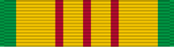

Vietnam Service Medal
Service awardVSM
For service in Southeast Asia in support of operations in Vietnam, July 4, 1965 to March 28, 1973.
Check your eligibility and build your ribbon rackHow you get it
You earn this by meeting the requirements. No recommendation is needed. If it's missing from your record, current members can have their MPF add it. Veterans can request it from AFPC with a Standard Form 180 and supporting documents.
You qualify if any of these apply
- Served in Vietnam or its contiguous waters or airspace between July 4, 1965 and March 28, 1973
- Served in Thailand, Laos, or Cambodia (or their airspace) in direct support of military operations in Vietnam during the period
- Awarded the Armed Forces Expeditionary Medal for Vietnam service between July 1958 and July 1965 (may exchange it for the VSM on request)
Quick facts
- Category
- Campaign and service
- Type
- Service award
- Authorized devices
- Bronze or Silver Service Star
- WAPS points
- 0
- Position in the AFPC listing
- 46 of 91 (listed in order of precedence)
Full AFPC fact sheet text
Background
Created by Executive Order 11213, July 8, 1965. It is awarded to all service members of the armed forces who between July 4, 1965 and March 28, 1973, served in the following areas of Southeast Asia; Vietnam and the contiguous waters and airspace; Thailand, Laos, or Cambodia; or the airspace thereof and in the direct support of military operations in Vietnam.
Personnel previously awarded the Armed Forces Expeditionary Medal for service in Vietnam between July 1958 and July 1965, may, upon request, exchange that medal for the Vietnam Service Medal (pictured below); however, no one is authorized to wear both medals solely for services in Vietnam.
Criteria
There were 17 different campaign periods, but the first, which was called the Vietnam Advisory Campaign, covered the period from March 15, 1962 to March 7, 1964. During this time there were never more than a few thousand U.S. troops involved in Vietnam.
The following is a list of Department of Defense recognized military campaigns associated with eligibility for the Vietnam Service Medal, provided a member meets the award eligibility criteria listed below:
-Vietnam Advisory Campaign: March 15, 1962 – March 7, 1965
-Vietnam Defense Campaign: *July 4, 1965 – Dec. 24, 1965
-Vietnam Counteroffensive Campaign: Dec, 25, 1965 – June 30, 1966
-Vietnam Counteroffensive Phase II: July 1, 1966 – May 31, 1967
-Vietnam Counteroffensive Phase III: June 1, 1967 – Jan. 29, 1968
-Tet Counteroffensive: Jan. 30, 1968 – April 1, 1968
-Vietnam Counteroffensive Phase IV: April 2, 1968 – June 30, 1968
-Vietnam Counteroffensive Phase V: July 1, 1968 – Nov. 1, 1968
-Vietnam Counteroffensive Phase VI: Nov. 2, 1968 – Feb. 22, 1969
-Tet '69 Counteroffensive: Feb. 23, 1969 – June 8, 1969
-Vietnam Summer-Fall 1969: June 9, 1969 – Oct. 31, 1969
-Vietnam Winter-Spring 1970: Nov. 1, 1969 – April 30, 1970
-Sanctuary Counteroffensive: May 1, 1970 – June 30, 1970
-Vietnam Counteroffensive VII: July 1, 1970 – June 30, 1971
-Consolidation I: July 1, 1971 – Nov. 30, 1971
-Consolidation II: Dec. 1, 1971 – March 20, 1972
-Vietnam Cease-Fire Campaign: March 30, 1972 – Jan. 28, 1973
Note: Asterisk (*) indicates the effective eligibility date for the VSM which began July 4, 1965, however the entire period for the Vietnam Defense Campaign is March 8, 1965 – Dec. 24, 1965.
Medal description
The medal was designed by Thomas H. Jones, a sculptor and former employee of the Institute of Heraldy, U.S. Army. Centered on the obverse of the medal is the figure of a dragon, behind a grove of bamboo trees. Below this design is the inscription "Republic of Vietnam Service." On the reverse of the medal is a cross-bow (the ancient weapon of Vietnam), surmounted by a lighted torch. Below this, along the outer edge are the words "United States of America" in raised letters.
Ribbon description
The ribbon has a thin stripe of red in the center, flanked on either side by a narrow stripe of yellow, thin stripe of red, wide stripe of yellow, and a narrow stripe of green at the edges, or predominately yellow with three red stripes at the center and green stripes at the edges. Campaign stars were worn on the ribbon to indicate the number of campaigns the recipients served in during their service in Vietnam.
Authorized devices
Bronze or Silver Service Star
Source: Vietnam Service Medal fact sheet, Air Force's Personnel Center